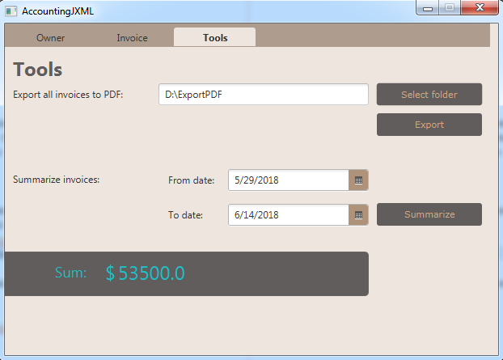

GUI
Graphical user interface (or GUI for short) is user interface which allows interaction between user
and electronic device through graphical icons and indicators.
TODO
JavaFX
JavaFX is a software platform for creating and delivering desktop applications as well as rich Internet applications (RIAS) that can run across a wide variety of devices. JavaFX has support for desktop comuters and web browsers on Microsoft windows Linux and macOS. Currently JavaFX is intended to slowly replace Swing for creatation GUI for java applications.
Application GUI
Our application's interface consists of three sections.
- Owner
- Invoice
- Tools
Owner
Section Owner is divided into two subsections and allows reset of all personal data.
- Subsection Personal data offers user to set up save and edit his personal information.
- Subsection Contacts gives access to database of telephone numbers and emails.


Invoice
Section Invoice is divided into four subsections.
- Subsection Trader offers similar options as subsection Personal data with addition of two radio buttons. Those are Payer and Seller and while filling out new Invoice this sets if the items bought or sold.
- Subsection Contacts gives access to database of telephone numbers and emails for buyer/seller.
- Subsection Items allows to set name unit price quantity and description for each item of the invoice.
- Subsection Type of invoice has setting for billing date issuing date and recipients address.

Tools
Section Tools allowes the user to summarize invoices by selecting from and to date. After summarization it writes the total profit/losses of selected period. It also allowes to export selected Invoices into PDF file.
